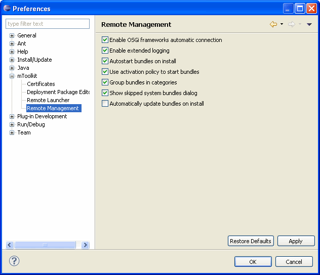
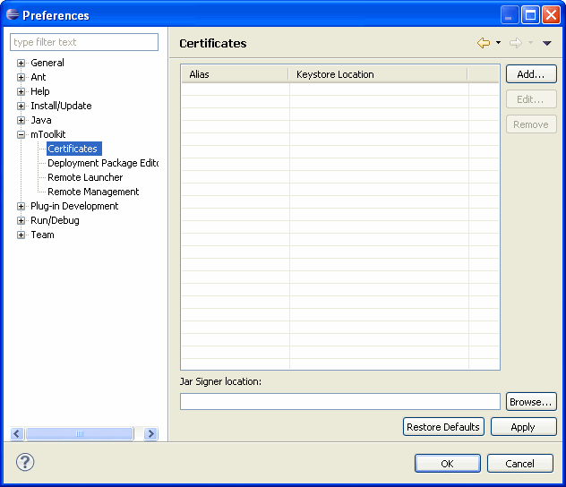
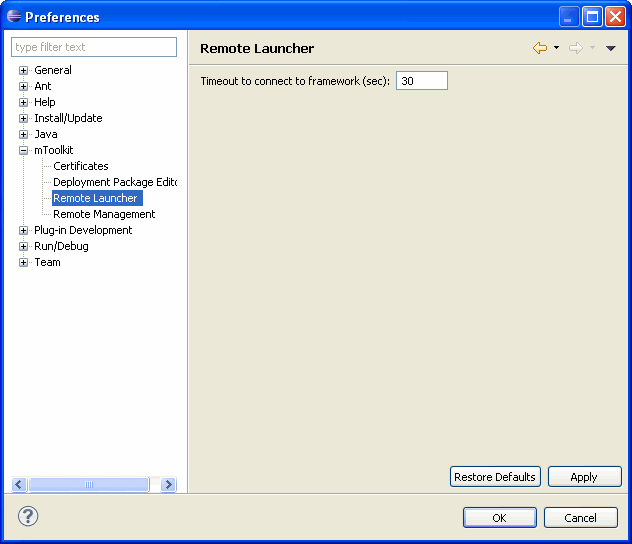
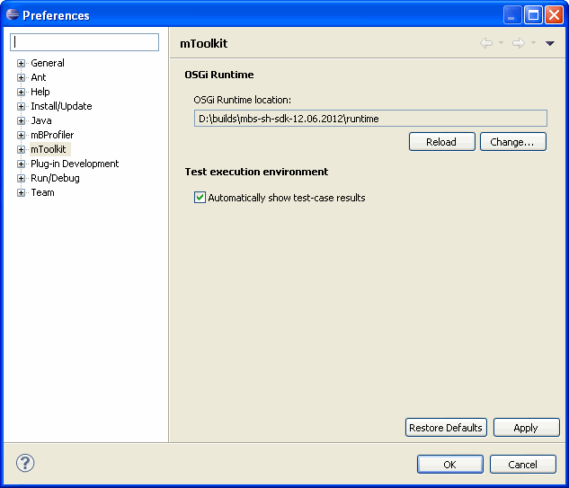

mToolkit allows you to customize remote management of OSGi frameworks - you can configure mToolkit to automatically connect to frameworks which have been already connected by third party Eclipse plug-ins, or to have information about OSGi management logged. To change mToolkit preferences:
Under the Remote Management preference sub-page, if needed use the following options:

Figure 1: OSGi Runtime remote management preferences
Under the Certificates sub-page specify the certificates (certificate and private/public key pair) which can be used to sign bundles and deployment packages upon deployment on a connected OSGi framework. Signing is activated individually for each OSGi framework in the relevant settings (see "Adding/Removing an OSGi Framework").
Use the Add button to specify a signer by keystore type and location, and signer alias within the keystore.
Enter the path to the jarsigner executable of your JDK in the Jar Signer Location text field or use the Browse button to locate it in the file system. It will be used to sign bundles and deployment packages.

Figure 2: Certificates preferences
For detailed information about the Deployment Package Editor refer to the "Configuring Deployment Package Editor" document.
The Remote Launcher sub-page allows you to set a timeout (in seconds) for a connection to a framework as (re)launching the OSGi runtime remotely on a slow device might take more timeout than originally expected. The default setting is 30s.

Figure 3: Remote Launcher timeout preference
If the Automatically show test-case results option is turned on and the Web Admin Console bundles are installed, a summary of the test cases execution results will be displayed in the Eclipse web browser after test-case execution is finished.

Figure 4: Automatically show test-case results option.
To save the changes made to the mToolkit preferences and options:

OSGi Management Overview
OSGi Frameworks Tree
Remote Console

Adding/Removing an OSGi Runtime
Configuring the Properties of an OSGi Runtime
Connecting to/Disconnecting from an OSGi Runtime
Managing Bundles
Managing Applications
Using the Remote Console
Customizing OSGi Runtime Management
Opening the Web Admin Console inside Eclipse
OSGi Runtime Management Troubleshooting

Frameworks View
Frameworks View Tree Icons
Frameworks View Menus and Toolbar